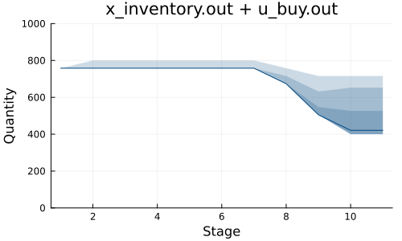
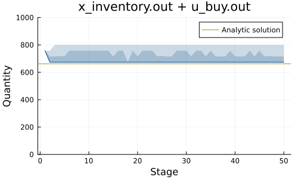

Example: inventory management
This tutorial was generated using Literate.jl. Download the source as a .jl file. Download the source as a .ipynb file.
The purpose of this tutorial is to demonstrate a well-known inventory management problem with a finite- and infinite-horizon policy.
Required packages
This tutorial requires the following packages:
using SDDPimport Distributionsimport HiGHSimport Plotsimport StatisticsBackground
Consider a periodic review inventory problem involving a single product. The initial inventory is denoted by $x_0 \geq 0$, and a decision-maker can place an order at the start of each stage. The objective is to minimize expected costs over the planning horizon. The following parameters define the cost structure:
cis the unit cost for purchasing each unithis the holding cost per unit remaining at the end of each stagepis the shortage cost per unit of unsatisfied demand at the end of each stage
There are no fixed ordering costs, and the demand at each stage is assumed to follow an independent and identically distributed random variable with cumulative distribution function (CDF) $\Phi(\cdot)$. Any unsatisfied demand is backlogged and carried forward to the next stage.
At each stage, an agent must decide how many items to order. The per-stage costs are the sum of the order costs, shortage and holding costs incurred at the end of the stage, after demand is realized.
Following Chapter 19 of Introduction to Operations Research by Hillier and Lieberman (7th edition), we use the following parameters: $c=35, h=1, p=15$.
x_0 = 10 # initial inventoryc = 35 # unit inventory costh = 1 # unit inventory holding costp = 15 # unit order cost15Demand follows a continuous uniform distribution between 0 and 800. We construct a sample average approximation with 20 scenarios:
Ω = range(0, 800; length = 20);This is a well-known inventory problem with a closed-form solution. The optimal policy is a simple order-up-to policy: if the inventory level is below a certain number of units, the decision-maker orders up to that number of units. Otherwise, no order is placed. For a detailed analysis, refer to Foundations of Stochastic Inventory Theory by Evan Porteus (Stanford Business Books, 2002).
Finite horizon
For a finite horizon of length $T$, the problem is to minimize the total expected cost over all stages.
In the last stage, the decision-maker can recover the unit cost c for each leftover item, or buy out any remaining backlog, also at the unit cost c.
T = 10 # number of stagesmodel = SDDP.LinearPolicyGraph(; stages = T + 1, sense = :Min, lower_bound = 0.0, optimizer = HiGHS.Optimizer,) do sp, t @variable(sp, x_inventory >= 0, SDDP.State, initial_value = x_0) @variable(sp, x_demand >= 0, SDDP.State, initial_value = 0) # u_buy is a Decision-Hazard control variable. We decide u.out for use in # the next stage @variable(sp, u_buy >= 0, SDDP.State, initial_value = 0) @variable(sp, u_sell >= 0) @variable(sp, w_demand == 0) @constraint(sp, x_inventory.out == x_inventory.in + u_buy.in - u_sell) @constraint(sp, x_demand.out == x_demand.in + w_demand - u_sell) if t == 1 fix(u_sell, 0; force = true) @stageobjective(sp, c * u_buy.out) elseif t == T + 1 fix(u_buy.out, 0; force = true) @stageobjective(sp, -c * x_inventory.out + c * x_demand.out) SDDP.parameterize(ω -> fix(w_demand, ω), sp, Ω) else @stageobjective(sp, c * u_buy.out + h * x_inventory.out + p * x_demand.out) SDDP.parameterize(ω -> fix(w_demand, ω), sp, Ω) end returnendA policy graph with 11 nodes.
Node indices: 1, ..., 11
Here's the graph:
# We need `open = false` to build the documentation. Remove if running locally.SDDP.plot(model, "model_inventory.html"; open = false)Train and simulate the policy:
SDDP.train(model)simulations = SDDP.simulate(model, 200, [:x_inventory, :u_buy])objective_values = [sum(t[:stage_objective] for t in s) for s in simulations]μ, ci = round.(SDDP.confidence_interval(objective_values, 1.96); digits = 2)lower_bound = round(SDDP.calculate_bound(model); digits = 2)println("Confidence interval: ", μ, " ± ", ci)println("Lower bound: ", lower_bound)-------------------------------------------------------------------
SDDP.jl (c) Oscar Dowson and contributors, 2017-26
-------------------------------------------------------------------
problem
nodes : 11
state variables : 3
scenarios : 1.02400e+13
existing cuts : false
options
solver : serial mode
risk measure : SDDP.Expectation()
sampling scheme : SDDP.InSampleMonteCarlo
subproblem structure
VariableRef : [9, 9]
AffExpr in MOI.EqualTo{Float64} : [2, 2]
VariableRef in MOI.EqualTo{Float64} : [1, 2]
VariableRef in MOI.GreaterThan{Float64} : [4, 5]
VariableRef in MOI.LessThan{Float64} : [1, 1]
numerical stability report
matrix range [1e+00, 1e+00]
objective range [1e+00, 4e+01]
bounds range [0e+00, 0e+00]
rhs range [0e+00, 0e+00]
-------------------------------------------------------------------
iteration simulation bound time (s) solves pid
-------------------------------------------------------------------
1 3.627211e+05 4.573582e+04 2.006388e-02 212 1
65 1.340079e+05 1.443373e+05 1.023091e+00 17080 1
88 1.539237e+05 1.443373e+05 1.406060e+00 23056 1
-------------------------------------------------------------------
status : simulation_stopping
total time (s) : 1.406060e+00
total solves : 23056
best bound : 1.443373e+05
numeric issues : 0
-------------------------------------------------------------------
Confidence interval: 148817.79 ± 3852.55
Lower bound: 144337.25Plot the optimal inventory levels:
plt = SDDP.publication_plot( simulations; title = "x_inventory.out + u_buy.out", xlabel = "Stage", ylabel = "Quantity", ylims = (0, 1_000),) do data return data[:x_inventory].out + data[:u_buy].outend
In the early stages, we indeed recover an order-up-to policy. However, there are end-of-horizon effects as the agent tries to optimize their decision making knowing that they have 10 realizations of demand.
Infinite horizon
We can remove the end-of-horizonn effects by considering an infinite horizon model. We assume a discount factor $\alpha=0.95$:
α = 0.95graph = SDDP.LinearGraph(2)SDDP.add_edge(graph, 2 => 2, α)graphRoot
0
Nodes
1
2
Arcs
0 => 1 w.p. 1.0
1 => 2 w.p. 1.0
2 => 2 w.p. 0.95The objective in this case is to minimize the discounted expected costs over an infinite planning horizon.
model = SDDP.PolicyGraph( graph; sense = :Min, lower_bound = 0.0, optimizer = HiGHS.Optimizer,) do sp, t @variable(sp, x_inventory >= 0, SDDP.State, initial_value = x_0) @variable(sp, x_demand >= 0, SDDP.State, initial_value = 0) # u_buy is a Decision-Hazard control variable. We decide u.out for use in # the next stage @variable(sp, u_buy >= 0, SDDP.State, initial_value = 0) @variable(sp, u_sell >= 0) @variable(sp, w_demand == 0) @constraint(sp, x_inventory.out == x_inventory.in + u_buy.in - u_sell) @constraint(sp, x_demand.out == x_demand.in + w_demand - u_sell) if t == 1 fix(u_sell, 0; force = true) @stageobjective(sp, c * u_buy.out) else @stageobjective(sp, c * u_buy.out + h * x_inventory.out + p * x_demand.out) SDDP.parameterize(ω -> fix(w_demand, ω), sp, Ω) end returnendA policy graph with 2 nodes.
Node indices: 1, 2
Here's the graph:
# We need `open = false` to build the documentation. Remove if running locally.SDDP.plot(model, "model_inventory_cyclic.html"; open = false)SDDP.train(model; iteration_limit = 400)simulations = SDDP.simulate( model, 200, [:x_inventory, :u_buy]; sampling_scheme = SDDP.InSampleMonteCarlo(; max_depth = 50, terminate_on_dummy_leaf = false, ),);-------------------------------------------------------------------
SDDP.jl (c) Oscar Dowson and contributors, 2017-26
-------------------------------------------------------------------
problem
nodes : 2
state variables : 3
scenarios : Inf
existing cuts : false
options
solver : serial mode
risk measure : SDDP.Expectation()
sampling scheme : SDDP.InSampleMonteCarlo
subproblem structure
VariableRef : [9, 9]
AffExpr in MOI.EqualTo{Float64} : [2, 2]
VariableRef in MOI.EqualTo{Float64} : [1, 2]
VariableRef in MOI.GreaterThan{Float64} : [4, 5]
numerical stability report
matrix range [1e+00, 1e+00]
objective range [1e+00, 4e+01]
bounds range [0e+00, 0e+00]
rhs range [0e+00, 0e+00]
-------------------------------------------------------------------
iteration simulation bound time (s) solves pid
-------------------------------------------------------------------
1 4.787478e+07 4.707547e+04 1.302400e-01 2521 1
41 2.727959e+04 3.070461e+05 1.131227e+00 16337 1
74 1.138102e+06 3.124254e+05 2.158023e+00 27689 1
97 4.862228e+05 3.126375e+05 3.221233e+00 37225 1
114 6.130162e+05 3.126600e+05 4.315243e+00 46125 1
122 2.028524e+06 3.126628e+05 5.514660e+00 54470 1
139 7.455869e+05 3.126646e+05 6.578357e+00 62026 1
150 2.748498e+05 3.126649e+05 7.582272e+00 68736 1
170 4.590185e+05 3.126650e+05 8.634856e+00 75035 1
181 5.922395e+05 3.126650e+05 9.777362e+00 81514 1
245 7.648711e+05 3.126650e+05 1.489065e+01 105497 1
282 1.601553e+05 3.126650e+05 1.997140e+01 123720 1
313 5.625132e+05 3.126650e+05 2.531816e+01 136477 1
340 1.392239e+06 3.126650e+05 3.127905e+01 148579 1
357 3.705974e+05 3.126650e+05 3.634985e+01 156660 1
371 7.543947e+04 3.126650e+05 4.136717e+01 163604 1
389 5.927447e+05 3.126650e+05 4.650938e+01 170090 1
400 6.899237e+05 3.126650e+05 4.988183e+01 174154 1
-------------------------------------------------------------------
status : iteration_limit
total time (s) : 4.988183e+01
total solves : 174154
best bound : 3.126650e+05
numeric issues : 0
-------------------------------------------------------------------Plot the optimal inventory levels:
plt = SDDP.publication_plot( simulations; title = "x_inventory.out + u_buy.out", xlabel = "Stage", ylabel = "Quantity", ylims = (0, 1_000),) do data return data[:x_inventory].out + data[:u_buy].outendPlots.hline!(plt, [662]; label = "Analytic solution")
We again recover an order-up-to policy. The analytic solution is to order-up-to 662 units. We do not precisely recover this solution because we used a sample average approximation of 20 elements. If we increased the number of samples, our solution would approach the analytic solution.